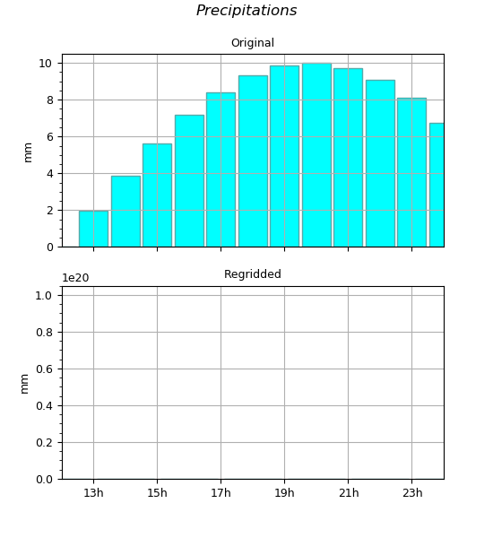

1.3.3.6.3.1.4. Remapping conservatif 1D¶
Le remapping conservatif est très similaire au remapping simple (method="remap"),
et a pour but de conserver la somme du champ d’entrée vers le champ de sortie.
Dans le cas conservatif, on n’effectue pas des moyennes mais des sommes.
Cette méthode est utile pour regriller par exemple des précipitations dans le temps.
Voir : regrid1d().

Des précipitations horaires sont réparties sur un axe de temps bi-horaire.
# -*- coding: utf-8 -*-
# Creation d'un jeu de precipitations horaires
import MV2, cdms2, numpy as N
from vacumm.misc.axes import create_time
hours = create_time((12*60, 25.*60, 60), 'minutes since 2000')
precip = MV2.sin(N.arange(len(hours))*.2)*10
precip.setAxis(0, hours)
precip.units = 'mm'
precip.long_name = 'Original'
# Nouvel echantillonnage / 2h
hours2 = create_time((10, 30., 2), 'hours since 2000')
# Regrillage 1D conservatif
from vacumm.misc.grid.regridding import regrid1d
precip2 = regrid1d(precip, hours2, 'conservative')
precip2.long_name = 'Regridded'
# Verifications
print 'Total precip.:'
print '- original =', precip.sum()
print '- remapped =', precip2.sum()
# > Total precip.:
# > - original = 89.957242832779755
# > - remapped = 89.957237
# Plots
from vacumm.misc.plot import savefigs
from vacumm.misc.plot import bar2
kwplot = dict(color='#00ffff',edgecolor='#55aaaa',
width=.9, date_fmt='%Hh', show=False)
b = bar2(precip, figsize=(5.5, 6), xhide=True,
subplot=211, top=.9, **kwplot)
b.figtext('Precipitations', style='italic')
bar2(precip2, subplot=212, **kwplot)
savefigs(__file__, pdf=True)
b.close()